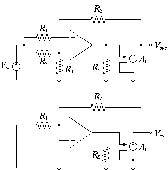

2024年演算増幅器設計コンテスト
シミュレーションの部では，参加者が設計した演算増幅器の特性を計算機シミュレーションによって評価し，参加者の回路設計技術を競います。
作品情報登録方法
作品受付は終了しました
審査部門と評価方法
本年は以下の4部門について作品の応募を受け付けます。 各部門において1位から7位までを表彰し、副賞を贈呈する予定です。
部門1, 2, 3 は、回路要件を満たしている作品の得点を次に示す評価式で算出し、得点の大きい順に仮順位をつけます。 最終順位は仮順位や回路図などを総合的に判断し、審査会において決定します。 また、審査会にて特に優れていると判断された参加者に最優秀賞を授与します。
部門 1: スルーレート・消費電流・同相入力範囲・直流利得 部門
得点スルーレート同相入力範囲直流利得消費電流
部門 2: 消費電力・出力抵抗・入力換算雑音・利得帯域幅積・位相余裕 部門
得点利得帯域幅積位相余裕消費電力出力抵抗入力換算雑音
部門 3: 電源電圧変動除去比・同相除去比・直流利得・電源電圧 部門
得点電源電圧変動除去比同相除去比直流利得電源電圧
部門 4: デザイン部門
指定された回路構成において，消費電力を競う。他の部門と異なり、試作の部で用いているフェニテックセミコンダクタ社のプロセスパラメータを使って設計していただきます。評価は評価式ではなく、指定した審査項目によって行なわれます。詳細はデザイン部門概要をご覧ください。一部情報に記載ミスが残ったままで公開を開始しておりましたので、訂正情報（該当箇所のみ）も併せて確認をお願いいたします。
{kind=link}
注意:
直流利得、同相除去比、電源電圧除去比は、デシベル値で評価されます（部門3のみ、PSRR, CMRR, 直流利得は真値で評価します）。
部門1, 2, 3
回路が満たすべき特性
本コンテストに参加するためには設計する演算増幅器が下記の要件(i)を満たす必要があります。 各評価項目については、「評価項目詳細」をご覧ください。
- 電源電圧
- rail-to-rail電圧が以下(ii)
- 消費電流
- 規定条件下(iii)にてバイアス電流の変動が以下
- 消費電力
- 以下
- 直流利得
- 以上
- 位相余裕
- 以上
- 利得帯域幅積
- 以上
- スルーレート
- 立ち上がり立ち下がりともに絶対値が以上
- 全高調波歪
- 以下
- 同相除去比
- 以上
- 電源電圧変動除去比
- 側, 側いずれか悪い側のでの値が以上
- 出力電圧範囲
- を中心とする出力電圧が正負電源電圧の以上
- 同相入力範囲
- を中心とする同相入力が正負電源電圧の以上
- 占有面積
- 以下
-
本来のデバイス耐圧はですが、初めて設計する学生も参加しやすいように本コンテストでは特別にまでの電源電圧の使用を許可します。より高い電圧を使用するとシミュレーションでは警告がでるかもしれませんが無視してください。
-
以下のすべての組み合わせでシミュレーションを行います。
low typ high 温度 電源電圧 設計値 例えば、電源電圧の設計値がの場合、low側が、high側がの電源電圧で計9回のシミュレーションを行い、バイアス電流の変動がtypのバイアス電流に対して以内であればこの要件を満たします。
評価項目共通のシミュレーション条件
プロセスパラメータ
本コンテストは過去にMOSISにて公開されていたTSMC社 CMOS のプロセスパラメータに以下の修正などを加えたものを利用してシミュレーションを行います。
-
雑音(フリッカ雑音)に関するパラメータAF,KFを追記する。
- nチャネルMOSFET
- AF=0.9 KF=2E-24
- pチャネルMOSFET
- AF=1.0 KF=2E-25
使用するパラメータはこちらからダウンロードしてください。性能指標の評価の説明では、このモデルファイルを使用することを前提にネットリストが書かれています。
このモデルパラメータには、MOSトランジスタのバルク端子とドレイン端子およびソース端子間のpn接合ダイオードのモデルが含まれていません。このpn接合に順方向バイアス電圧が掛かると、ダイオードがオンになり大きな電流が流れます。シミュレーションではこの現象が発生しませんが、審査の際には考慮されますので、バルク・ソース間およびバルク・ドレイン間電圧がを超えないようにしてください。
使用可能な素子値およびサイズ
MOSトランジスタ
- 最小チャネル長
- 最大チャネル長
- チャネル幅の10倍または
- 最小チャネル幅
- サイズ刻み幅
- 注意
- トランジスタのドレイン、ソース領域の周囲長・面積（AD, AS, PD, PS）は、自動的に計算されて設定されます。計算方法は、占有面積の評価方法を参照ください。
容量
- 最小容量値
抵抗
- 単位抵抗値
- 最小抵抗値
- ※
- 最大合計抵抗値
※以上の抵抗値でも例えばなど、以下の端数を含む抵抗値は不可です。
部門4
デザイン部門概要をご覧ください。
シミュレータ
全ての部門に共通した設定です。使用するシミュレータは PrimeSim HSPICE R-2020.12-SP1 liunx64 です。シミュレーションの際に以下のオプションを設定しています。
- INGOLD=2
- NUMDGT=5
- MEASDGT=5
- CONVERGE=1
- DCON=1
- POST
- UNWRAP
- STRICT_CHECK=1
- SYMB=1
- NOMOD
- CPTIME=180
その他の条件
- 特に記述が無い場合は申告した電源電圧および設定温度でシミュレーションを行います．
- 全てのシミュレーションは正と負の電源電圧を用いることを前提とし，評価回路の同相電位はです．
電源電圧
- 評価する値
- 応募者が申告した電源電圧
- 要件
- rail-to-rail電源電圧が以下
- 説明
-
作品を投稿する際にネットリストの中に
.PARAM psvoltage=○○V
という一行があります。この行は使用している電源電圧を宣言するためのものであり、評価システムはこれを読み取り、申告されている電源電圧として認識しています。両電源（正と負の電源電圧）を用いて設計した場合、ここで申告する電圧は両者の絶対値の合計になります。
例えば、の電源電圧を使う場合は
.PARAM psvoltage=と記述します。評価システムの中ではこの値をもとにシミュレーションで使う正と負の電源を設定します。
- その他
-
- より高い電源電圧を設定されると投稿システムが作品を受け付けません。
- 申告された電源電圧を使用時に演算増幅器が要件を満たさない場合は審査の対象外となるので注意してください。
消費電流
- 評価する値
- 無信号時の消費電流
- 要件
- 電源電圧を申告した値およびそれの、温度をおよび、と設定した際のバイアス電流の変動が申告した電源電圧と温度でシミュレーションした際のバイアス電流値の以内である。
- 回路構成と条件
- シミュレーション方法
-
バイアス電流はバイアス解析命令.OPを用いてシミュレーションできますが、ここでは直流解析.DCと.MEASURE命令を併用します。
- DC simulation for bias current and power dissipation
- .INCLUDE "new018.mdl" $ include your model parameter here
- .INCLUDE "opamp" $ include your opamp netlist here
- VIN inp 0 dc 0
- VDD vdd 0 'step'
- VSS 0 vss 'step'
- X1 s inp out vdd vss opamp
- R1 s 0 valr1
- R2 out s valr2
- .PARAM half='psvoltage/2' valr1=10k valr2=10k
- .DC VIN -0.01 0.01 0.01 SWEEP step POI 3 '0.9*half' 'half' '1.1*half'
- .TEMP -40 25 80
- .MEAS DC ivdd FIND I(VDD) AT=0
- .MEAS DC ivss FIND I(VSS) AT=0
- .MEAS DC ib PARAM='max(abs(ivdd),abs(ivss))'
- .MEAS DC pdis PARAM='ib*2*step'
- .END
- .DC VIN -0.01 0.01 0.01 SWEEP half POI 3 '0.9*half' 'half'
- この一行は直流掃引解析の設定です。VINをからまでのステップで掃引します。また、halfは片電源電圧で、申告値の0.9、1、1.1倍、計3点の電源電圧で直流掃引行うことを意味します。
- .TEMP -40 25 80
- 温度設定をにし、シミュレーションを3回行います。ちなみに、明記してない場合、hspiceのデフォルト設定はです。
- .MEAS DC ivdd FIND I(VDD) AT=0
- VIN=0の時のに流れる電流をivddとして取得します。その次の1行はに対して同じ処理を行います。これらの命令よってivddおよびivssはそれぞれおよびのバイアス電流になります。
- .MEAS DC ib PARAM='max(abs(ivdd),abs(ivss))
- ivddとivssの絶対値を取り、どちらか大きい方の値を変数ibに代入します。よって、ibが回路の消費電流となります。
- .MEAS DC pdis PARAM='ib*2*half
- 消費電力を変数pdisに代入するための命令です。
サンプルネットリストを使ってシミュレーションすると拡張子mt0、mt1、mt2、三つのファイルが出力され、それぞれのファイルに各温度設定時の.MEASの結果が書いてあります。また、各ファイルには電源電圧を変化させた際の三つのバイアス電流値が記載されています。
補足：.MEASは.MEASUREを省略して書いたものです。
- 説明
-
無信号時とは図1の回路において非反転入力端子が接地される()時のことです。この時、演算増幅器がオフセット電圧を持つと負荷となっている帰還抵抗に直流電流が流れ、から流れでる電流またはに流れ込む電流のどちらかがより大きくなります。そのため、バイアス電流は両方の電源の電流をみて、大きい方を回路の消費電流とします。
- その他
-
要件には「規定条件下にてバイアス電流の変動が以下」とあります。ここでいう規定条件とは指定されている温度や電圧の組み合わせを用いてシミュレーションを行うことです。一般的に集積回路の検証ではPVT(P:process,V:voltage,T:temperature)の変動に対する回路性能を評価します。本コンテストで使用するプロセスパラメータはプロセスコーナーの情報（ばらつき情報）を持っていないため、電源電圧と温度だけをばらつかせバイアスの安定性を評価します。
消費電流
- 評価する値
- 無信号時の消費電流
- 要件
- 電源電圧を申告した値およびそれの、温度をおよび、と設定した際のバイアス電流の変動が申告した電源電圧と温度でシミュレーションした際のバイアス電流値の以内である。
- 回路構成と条件
- シミュレーション方法
-
バイアス電流はバイアス解析命令.OPを用いてシミュレーションできますが、ここでは直流解析.DCと.MEASURE命令を併用します。
- DC simulation for bias current and power dissipation
- .INCLUDE "new018.mdl" $ include your model parameter here
- .INCLUDE "opamp" $ include your opamp netlist here
- VIN inp 0 dc 0
- VDD vdd 0 'step'
- VSS 0 vss 'step'
- X1 s inp out vdd vss opamp
- R1 s 0 valr1
- R2 out s valr2
- .PARAM half='psvoltage/2' valr1=10k valr2=10k
- .DC VIN -0.01 0.01 0.01 SWEEP step POI 3 '0.9*half' 'half' '1.1*half'
- .TEMP -40 25 80
- .MEAS DC ivdd FIND I(VDD) AT=0
- .MEAS DC ivss FIND I(VSS) AT=0
- .MEAS DC ib PARAM='max(abs(ivdd),abs(ivss))'
- .MEAS DC pdis PARAM='ib*2*step'
- .END
- .DC VIN -0.01 0.01 0.01 SWEEP half POI 3 '0.9*half' 'half'
- この一行は直流掃引解析の設定です。VINをからまでのステップで掃引します。また、halfは片電源電圧で、申告値の0.9、1、1.1倍、計3点の電源電圧で直流掃引行うことを意味します。
- .TEMP -40 25 80
- 温度設定をにし、シミュレーションを3回行います。ちなみに、明記してない場合、hspiceのデフォルト設定はです。
- .MEAS DC ivdd FIND I(VDD) AT=0
- VIN=0の時のに流れる電流をivddとして取得します。その次の1行はに対して同じ処理を行います。これらの命令よってivddおよびivssはそれぞれおよびのバイアス電流になります。
- .MEAS DC ib PARAM='max(abs(ivdd),abs(ivss))
- ivddとivssの絶対値を取り、どちらか大きい方の値を変数ibに代入します。よって、ibが回路の消費電流となります。
- .MEAS DC pdis PARAM='ib*2*half
- 消費電力を変数pdisに代入するための命令です。
サンプルネットリストを使ってシミュレーションすると拡張子mt0、mt1、mt2、三つのファイルが出力され、それぞれのファイルに各温度設定時の.MEASの結果が書いてあります。また、各ファイルには電源電圧を変化させた際の三つのバイアス電流値が記載されています。
補足：.MEASは.MEASUREを省略して書いたものです。
- 説明
-
無信号時とは図1の回路において非反転入力端子が接地される()時のことです。この時、演算増幅器がオフセット電圧を持つと負荷となっている帰還抵抗に直流電流が流れ、から流れでる電流またはに流れ込む電流のどちらかがより大きくなります。そのため、バイアス電流は両方の電源の電流をみて、大きい方を回路の消費電流とします。
- その他
-
要件には「規定条件下にてバイアス電流の変動が以下」とあります。ここでいう規定条件とは指定されている温度や電圧の組み合わせを用いてシミュレーションを行うことです。一般的に集積回路の検証ではPVT(P:process,V:voltage,T:temperature)の変動に対する回路性能を評価します。本コンテストで使用するプロセスパラメータはプロセスコーナーの情報（ばらつき情報）を持っていないため、電源電圧と温度だけをばらつかせバイアスの安定性を評価します。
出力抵抗
- 評価する値
- 開ループの出力抵抗(求め方は下記の説明を参照)
- 要件
- 無し
- 回路構成と条件
- シミュレーション方法
-
出力抵抗は伝達関数解析命令.TFを用いてシミュレーションします。
- Simulation for output resistance
- .INCLUDE "new018.mdl" $ include your model parameter here
- .INCLUDE "opamp" $ include your opamp netlist here
- IOUT out 0 DC 0 AC 1
- VDD vdd 0 'half'
- VSS 0 vss 'half'
- X1 s 0 out vdd vss opamp
- RF out s valrf
- CF out s valcf
- .PARAM half='psvoltage/2' valrf=1T valcf=10m
- .AC DEC 100 0.1 10G
- .MEAS AC ro FIND V(out) AT=0.1
- .END
- .TF V(out) VIN
-
TFはTransfer Functionの略で、VINからV(out)までの小信号伝達を求めるための命令です。ここでの小信号伝達は直流でのものであり、利得、出力抵抗、入力抵抗の値が出力されます。
このシミュレーションで得られる出力抵抗は閉ループ時のものなので下記の説明の通りに実際の出力抵抗を求めます。
- 説明
-
演算増幅器は大きな直流利得を持つため、バイアス点を適切に定めるために必ず負帰還を掛けてシミュレーションします。上記回路では抵抗とによって負帰還が構成されています。この状態で.TF命令を実行すると負帰還が掛かる閉ループの出力抵抗が出力されます。実際の値を得るにはシミュレーション結果を補正する必要があります。
演算増幅器の実際の出力抵抗を、シミュレーション結果をとすると実際の出力抵抗は
で求められます。但し、
- 演算増幅器の直流利得のシミュレーション結果
- 演算増幅器の出力抵抗のシミュレーション結果
- 直流利得を求めた際の負荷抵抗
- 帰還率=
です。詳しくは後述の導出過程をご覧ください。
- その他
-
要件では出力抵抗の規定はありませんが最小値をと決められています。シミュレーションではよりも小さい出力抵抗を得ることが出来ますが、実際の回路では配線やビアの抵抗などを考えると現実的な値ではありません。そのことを反映させるために規定値よりも低い出力抵抗は自動的にと評価します。
- 導出過程
-
図に示す通り、シミュレーションから求められる直流利得 と出力抵抗はそれぞれ
と定義される。しかし、それぞれの真値は と なので、シミュレーション結果を用いて真値を求める必要がある。
図(a)より、直流利得の真値 は
と求められる。 一方、図(b)より出力抵抗は次のように求められる。 出力端子の節点方程式より
が得られる。 とし、両辺をで割ると
が得られる。式(1)を式(2)に代入すると
が得られ、出力抵抗の真値は
と求められる。
直流利得
- 評価する値
- 入力信号の周波数がの時の開ループ利得(求め方は下記の説明を参照)
- 要件
- 以上
- 回路構成と条件
- シミュレーション方法
-
直流利得を求めるためには.AC命令を用いて小信号解析を行います。
- Simulation for DC gain, phase margin and gain bandwidth product
- .INCLUDE "new018.mdl" $ include your model parameter here
- .INCLUDE "opamp" $ include your opamp netlist here
- VIN inp 0 dc 0 ac 1
- VDD vdd 0 'half'
- VSS 0 vss 'half'
- X1 s inp out vdd vss opamp
- RL out 0 valrl
- RF out s valrf
- CF s 0 valcf
- .PARAM half='psvoltage/2' valrl=20k valrf=1T valcf=10m
- .AC DEC 100 0.1 10G
- .PRINT VDB(out) VP(out)
- .MEAS AC dcgain FIND VDB(out) AT=0.1
- .END
- .AC DEC 100 0.1 10G
- この命令は小信号解析を行うための命令であり、周波数をからまで掃引します。また、DEC 100は周波数が10倍変わるごとに100個データを取ります。この場合、データの間隔は等比（対数軸上で等間隔）です。
- .PRINT VDB(out) VP(out)
- 節点outにおける振幅および位相特性を出力するための命令です。VDB()はデシベル値の振幅特性を出力し、VP()は位相特性を出力します。
- .MEAS AC dcgain FIND VDB(out) AT=0.1
- 直流利得を変数dcgainに代入するための命令です。直流利得は周波数における利得として評価されます。変数dcgainにはデシベル値の利得が収納されます。
利得帯域幅積と位相余裕も同じネットリストを使ったシミュレーションで求められます。両者を求めるにはCustom Explorerなど、シミュレーション結果をプロットできるソフトウェアを使ってください。
- 説明
-
直流において上記回路はの帰還抵抗によって負帰還構成となっているため回路の直流バイアスが定まります。入力信号の周波数が高くなるにつれて反転入力端子と接地の間に接続されているの容量のインピーダンスが小さくなるため負帰還量がゼロに近づき、反転入力端子が接地されているかのように見えます。この時、回路が開ループの時と同じ状態になり出力には開ループ利得倍された入力電圧が現れます。よって、出力端子での利得や位相特性は開ループ時の特性とほぼ等しくなります。
本シミュレーションで得られた直流利得は本来の直流利得ではなく，出力抵抗の影響を受けたものである．実際の直流利得とシミュレーション値の関係は
である。但し，
- 負荷抵抗()
- 演算増幅器の出力抵抗（「出力抵抗」の項目を参照）
である。評価システム内で上記の関係式を用いて直流利得の値を修正しています。
位相余裕
- 評価する値
- −|単一利得帯域内の最大位相回転|
- 要件
- 以上
- 回路構成と条件
- シミュレーション方法
-
直流利得を求めるシミュレーションと同時に求めることが出来ます。
- Simulation for DC gain, phase margin and gain bandwidth product
- .INCLUDE "new018.mdl" $ include your model parameter here
- .INCLUDE "opamp" $ include your opamp netlist here
- VIN inp 0 dc 0 ac 1
- VDD vdd 0 'half'
- VSS 0 vss 'half'
- X1 s inp out vdd vss opamp
- RL out 0 valrl
- RF out s valrf
- CF s 0 valcf
- .PARAM half='psvoltage/2' valrl=20k valrf=1T valcf=10m
- .AC DEC 100 0.1 10G
- .PRINT VDB(out) VP(out)
- .MEAS AC dcgain FIND VDB(out) AT=0.1
- .END
ネットリストの説明は、「直流利得」を参照してください。
- 説明
-
一般的に位相余裕は
「開ループ利得がになった時周波数において出力電圧の位相回転がになるのに必要な位相」
と定義されています。この定義通りに求めるなら開ループ利得がになった周波数において出力電圧の位相を求め、からその分引いた値が位相余裕になります。しかし、この定義には大前提が存在します。それは、主要極以外の極および零点の影響が十分無視できることです。
過去のコンテストではこの定義通りの評価をしましたが応募作品の中で意図的に零点を挿入し、局地的に位相回転を戻すものがありました。それによって、一見して位相余裕のある演算増幅器に見えるがステップ応答の収束性が悪かったりします。位相余裕は演算増幅器の収束性を判断するためのパラメータなのでこれでは意味がありません。位相余裕の本来の意味に近づけるために本コンテストでは上記の独自の評価方法を用います。
利得帯域幅積
- 評価する値
-
- 開ループ利得がになった周波数
- 開ループ利得が直流利得の平方根(dBで半分)になった時の周波数と利得の積
のどちらか小さい方の値
- 要件
- 以上
- 回路構成と条件
- シミュレーション方法
-
利得帯域幅積は直流利得を求めるために行った小信号解析の結果から求めることが出来ます。
- Simulation for DC gain, phase margin and gain bandwidth product
- .INCLUDE "new018.mdl" $ include your model parameter here
- .INCLUDE "opamp" $ include your opamp netlist here
- VIN inp 0 dc 0 ac 1
- VDD vdd 0 'half'
- VSS 0 vss 'half'
- X1 s inp out vdd vss opamp
- RL out 0 valrl
- RF out s valrf
- CF s 0 valcf
- .PARAM half='psvoltage/2' valrl=20k valrf=1T valcf=10m
- .AC DEC 100 0.1 10G
- .PRINT VDB(out) VP(out)
- .MEAS AC dcgain FIND VDB(out) AT=0.1
- .END
ネットリストの説明は「直流利得」を参照してください。
- 説明
-
一般的に演算増幅器は開ループ利得が以上の周波数帯域において一つの極しか持たないように設計されています。この極を主要極(dominant pole)と言います。そのため演算増幅器の開ループ利得をボード線図上にプロットした際、主要極より高い周波数帯域で利得が/decの傾きで減衰します。これは周波数が10倍になると利得が(1/10)に減衰することを意味します。この時、任意の周波数とその周波数における演算増幅器の開ループ利得の積は一定となりそれを利得帯域幅積と呼びます。
主要極以外の極または零点が十分高い周波数にありその影響を無視できるなら演算増幅器の開ループ利得がになった時も同じ傾きを持っていると考えられます。よって、この場合、開ループ利得になった時の周波数は利得帯域幅積と等しくなります。ちなみに、直流から開ループ利得がになった周波数までの帯域を単一利得帯域幅(unity gain bandwidth)と言います。
入力換算雑音
- 評価する値
- からまでの入力換算雑音の積分値
- 要件
- 無し
- 回路構成と条件
-
但し、帰還抵抗には熱雑音を生じない抵抗モデルを用います 。
- シミュレーション方法
-
雑音の解析には.ACと.NOISEを併用して行いますが出力電圧節点と入力電圧源だけを指定するとシミュレータは雑音積分値を出力しません。入力換算雑音の積分値を出力するには下記のサンプルネットリストに書いてある通りに、出力節点と入力電圧源の指定の他にどのぐらいの周波数間隔で積分値を求めるかの設定を追加すればいいです。
- Input refered noise simulation
- .INCLUDE "new018.mdl" $ include your model parameter here
- .INCLUDE "opamp" $ include your opamp netlist here
- VIN inp 0 dc 0
- VDD vdd 0 'half'
- VSS 0 vss 'half'
- X1 s inp out vdd vss opamp
- R1 s 0 nores valr1
- R2 out s nores valr2
- .MODEL nores R noise=0
- .PARAM half='psvoltage/2' valr1=10k valr2=10k
- .AC DEC 100 0.1 1MEG
- .NOISE V(out) VIN 100
- .MEAS AC input_noise INTEG par('inoise(m)*inoise(m)') FROM=0.1 TO=1meg
- .MEAS AC irn param='sqrt(input_noise)'
- .END
- .MODEL nores R noise=0
- 熱雑音を持たない抵抗モデルを記述するための命令です。帰還抵抗にこのモデルを適応することで演算増幅器のみの雑音を評価できます。
- .NOISE V(out) VIN 100
- 雑音解析を行うための命令です。VINは雑音を入力換算するための電圧原です。VINが雑音原となった時の換算雑音電圧が得られます。V(out)は出力節点の電圧であり、節点outに雑音電圧が出力されます。なお、行末に書いてある数字は積分値を出力するのに必要なものです。この数字が無いと、出力されるのは雑音電力スペクトラム密度です。.AC命令でDEC 100と設定しているので.NOISEでも同じ数字を記入します。そうすれば.ACで指定されたシミュレーション点をすべて使い、雑音の計算が行われます。出力されている積分値は指定されている周波数範囲（-）の積分値となります。
スルーレート
- 評価する値
- 立ち上がりまたは立ち下がりスルーレートのどちらか小さい方(スルーレートの求め方は下記の説明を参照)
- 要件
- 以上。但し、
- スルーレート評価で検出される出力電圧波形の立ち上がりおよび立ち下がりがそれぞれ一つしか存在しない
- 出力電圧は以内に収束し、収束した後の出力電圧が入力電圧の2.04倍以下(評価回路に利得が2倍の非反転増幅器を用いるため)
- 回路構成と条件
- 立ち上がり
-
からに変化するステップ電圧
立ち上がりの傾きがとなるように立ち上がり時間を設定してください．
- 立ち下がり
-
からに変化するステップ電圧
立ち下がりの傾きがとなるように立ち下がり時間を設定してください．
- の求め方
- からまで変化する直流入力電圧に対して実際の出力電圧と理想出力電圧との誤差が未満の入力電圧範囲を求めます。得られた入力電圧範囲内でを中心として取り得る最大入力電圧振幅をとします。
- シミュレーション方法
-
スルーレートの評価は.TRANを用いた過渡解析で行います。この時、入力電圧には立ち上がりおよび立ち下がりのステップ電圧を用います。回路の出力が収束するのに十分な時間を確保出来るようにパルスの長さを決めます。
- Slewrate simulation
- .INCLUDE "new018.mdl" $ include your model parameter here
- .INCLUDE "opamp" $ include your opamp netlist here
- VDD vdd 0 'half'
- VSS 0 vss 'half'
- * For rise edge slewrate
- X1 s1 in1 o1 vdd vss opamp
- R1a s1 0 valr1
- R1b o1 s1 valr2
- * For fall edge slewrate
- X2 s2 in2 o2 vdd vss opamp
- R2a s2 0 valr1
- R2b o2 s2 valr2
- * Offset voltage
- Xos ss 0 os vdd vss opamp
- Rosa ss 0 valr1
- Ros os ss valr2
- * Stimulus
- VIN1 in1 0 PWL (
- +'td' '-vp'
- +'td+tr' 'vp'
- +'td+tr+tp' 'vp'
- +'td+tr+tp+tf' 'vp/2'
- +'td+tr+tp+tf+tp' 'vp/2' )
- E1 0 in2 in1 0 1 $ inverted input for fall edge
- .PARAM half='psvoltage/2' valr1=10k valr2=10k srmax=1e11
- + vp= $ pulse amplitude, use your simulated value of maximum input voltage
- + td=100n $ pulse delay
- + tr='vp/srmax' $ pulse rise time
- + tf='vp/srmax' $ pulse fall time
- + tp=200u $ pulse width
- * Analysis
- .TRAN 10p 400u $ transient simulation for 400us with 10ps time step
- * Measurements for rise edge (remove offset voltage from the output voltage)
- .MEAS TRAN vo1min FIND V(o1,os) AT=0
- .MEAS TRAN vo1max FIND V(o1,os) AT=200u
- .MEAS TRAN vo1f FIND V(o1,os) AT=400u
- .MEAS TRAN vi1f FIND V(in1) AT=400u
- .MEAS TRAN srr1 DERIV V(o1,os) WHEN V(o1,os)='0.9*vo1min'
- .MEAS TRAN srr2 DERIV V(o1,os) WHEN V(o1,os)=0
- .MEAS TRAN srr3 DERIV V(o1,os) WHEN V(o1,os)='0.9*vo1max'
- .MEAS TRAN srr PARAM='(srr1+srr2+srr3)/3'
- * Measurements for fall edge (remove offset voltage from the output voltage)
- .MEAS TRAN vo2max FIND V(o2,os) AT=0
- .MEAS TRAN vo2min FIND V(o2,os) AT=200u
- .MEAS TRAN vo2f FIND V(o2,os) AT=400u
- .MEAS TRAN vi2f FIND V(in2) AT=400u
- .MEAS TRAN srf1 DERIV V(o2,os) WHEN V(o2,os)='0.9*vo2max'
- .MEAS TRAN srf2 DERIV V(o2,os) WHEN V(o2,os)=0
- .MEAS TRAN srf3 DERIV V(o2,os) WHEN V(o2,os)='0.9*vo2min'
- .MEAS TRAN srf PARAM='(srf1+srf2+srf3)/3'
- * Choose the smaller value as slewrate measurement result
- .MEAS TRAN sr PARAM='min(abs(srr),abs(srf))'
- .END
- 説明
-
入力電圧には、ネットリストでvpと表記されている値を用います。値が設定されていませんが、これはと等しい値に設定してください。評価システムではこの値を同相電圧入力範囲から自動的に算出します。ただし何らかの理由で自動的に算出できなかった場合、100mVが使用されます。
立ち上がりの場合、入力電圧をからまで変化させ、最終値に収束した後にスルーレートを計算します。スルーレートの求め方はいくつかありますが本コンテストでは
の3点で求めた値の平均値と定義します。但し、およびはそれぞれ出力電圧が収束した後の正側と負側の電圧です。下記図の例では
と求められます。ネットリストではとしていますが、回路がもっと早く収束すれば短く設定することも出来ます。
ネットリストでは、in1 と in2 を用いて立ち上がりと立ち下がりを同時に計算させています。小さい方の値をスルーレートとして評価します。
また、ネットリストではスルーレートを求めた後に、入力電圧をに変化させ、最終電圧を求めています。これは、回路が安定しているかどうかを判定するためです。最終電圧が入力電圧の2.04倍を超えている場合は発散とみなします。
を中心とし，上記図の評価回路が取り得る最大入力電圧振幅を入力ステップ電圧の振幅とします。入力ステップ電圧原を以下のように設定してください。
全高調波歪
- 評価する値
- 下記図の回路およびシミュレーション条件における出力電圧の全高調波歪
- 要件
- 以下
- 回路構成と条件
- 電源電圧をそれぞれからおよびからへと変化するステップ入力
- 入力電圧は周波数が，振幅がの正弦波とし，電源電圧のステップが変化しはじめてから後に加える
- シミュレーション方法
-
全高調波歪の評価は.TRANと.FOURを用いた過渡解析で行います．
- Simulation for THD
- .INCLUDE "new018.mdl" $ include your model parameter here
- .INCLUDE "opamp" $ include your opamp netlist here
- VIN inp 0 SIN 0 2.5m 100 1m
- VDD vdd 0 PULSE 0 half 0 0.1n 0.1n 1.5015 2.002
- VSS 0 vss PULSE 0 half 0 0.1n 0.1n 1.5015 2.002
- X1 s inp out vdd vss opamp
- R1 s 0 valr1
- R2 out s valr2
- .PARAM half='psvoltage/2' valr1=10k valr2=10k
- .PARAM fs=100 tstop='9/fs' tstep='1/fs/1024'
- .TRAN tstep tstop
- .FFT V(out) START='tstop-8/fs' STOP=tstop NP='1024' WINDOW=HAMM FREQ=fs FMIN=fs FMAX=1000
- .MEAS FFT thd THD VM(out) NBHARM=10
- .END
- .TRAN 10n 1.001 START='1.001-10m
- 過渡解析の設定です。時間ステップが10nsで1.001までのシミュレーションを実行します。STARTはデータを出力する開始時間を設定します。上記の場合はシミュレーション終了時間の10ms間前のデータのみを出力します。入力正弦波の周波数はなので、ちょうど1周期分データとなります。
- .FOUR 100 V(out)
- 全高調波歪の解析設定です。上記の設定では基本波をとして、出力電圧V(out)の全高調波歪を求めます。
- 説明
-
全高調波歪は回路の出力が定常状態なっているところで評価しています．サンプルネットリストでは1秒までの過渡解析を行っています．これはの正弦波を100波取り込んだことになりますが，最後の1波（10m秒）の結果だけを出力します．全高調波歪を評価するためには基本波の1波分のデータがあれば十分だからです．重要なのが1波分のデータポイント数です．データポイントをたくさん取れば取る程計算精度がよくなりますが一般的に基本波の周期の1/100の間隔でデータを出力すればいいと言われています．要するに1波当たりに100ポイントのデータがあればいいということになります．これは.FOURは第9次までの高調波しか計算しないからです．サンプルのネットリストでは1波当たり1000点のデータポイントを取っています．
同相除去比
- 評価する値
- 〜までの周波数における同相除去比の最大値
- 要件
- 以上
- 回路構成と条件
- シミュレーション方法
-
上記回路図に示すように同相除去比を評価するための回路は開ループ利得を求めるための回路に同相利得を求めるための回路を追加した構成になります。
- CMRR simulation
- .INCLUDE "new018.mdl" $ include your model parameter here
- .INCLUDE "opamp" $ include your opamp netlist here
- VIN in 0 dc 0 ac 1
- VDD vdd 0 half
- VSS 0 vss half
- X1 s1 in oc vdd vss opamp
- R11 oc s1 valrf
- C11 s1 in valcf
- R21 oc 0 valrl
- X2 s2 in od vdd vss opamp
- R12 od s2 valrf
- C12 s2 0 valcf
- R22 od 0 valrl
- .PARAM half='psvoltage/2' valrl=20k valrf=1T valcf=10m
- .AC DEC 100 0.1 10G
- .MEAS AC cmrr MAX VDB(od,oc) FROM=0.1 TO=10G
- .END
- .MEAS AC cmrr MAX VDB(od,oc) FROM=0.1 TO=10G
-
VDB(od,oc)は差動利得VDB(od)と同相利得VDB(oc)の差を出力します。デシベル値の差なので実際は両者の比を取ることになります。上記の命令は-の周波数における最大値を変数cmrrに代入します。
- 説明
-
同相利得を求めるための回路には演算増幅回路の入力端子の間に大きな容量を接続し、反転入力端子と出力端子の間に大きな帰還抵抗を接続します。直流では容量が開放となるためによって演算増幅器に負帰還がかかり、バイアス状態が決定されます。入力周波数が高くなるにつれて容量のインピーダンスが小さくなり演算増幅器の入力端子が短絡される状態になります。また、帰還抵抗が大きな抵抗値を持つため、周波数が高くなると入力端子と出力端子が開放される状態になり入力端子の電位が同じように変動する（同相入力）際の出力電圧が見られます。この出力電圧と入力電圧の比を同相利得と言い
と定義します。一方、演算増幅器の開ループ利得は差動利得と言い
で与えられます。同相除去比CMRRは
と求められます。
電源電圧変動除去比
- 評価する値
- または側のにおける電源電圧変動除去比のどちらか小さい方
- 要件
- 以上
- 回路構成と条件
- シミュレーション方法
-
PSRRのシミュレーションは.ACを用いた小信号解析で行います。電源と演算増幅器の電源端子の間に小信号電圧源を挿入し、入力端子を接地した上で、出力電圧を観測します。この際、との両方に同時に小信号源を挿入してはいけません。
- PSRR simulation
- .INCLUDE "new018.mdl" $ include your model parameter here
- .INCLUDE "opamp" $ include your opamp netlist here
- VIN in 0 dc 0 ac 1
- VDD vdd 0 half
- VDD1 vdd vdd1 dc 0 ac 1
- VSS 0 vss half
- VSS1 vss2 vss dc 0 ac 1
- * For differential gain
- X1 s in od vdd vss opamp
- R1 od s valrf
- C1 s 0 valcf
- R2 od 0 valrl
- * For VDD
- X1a s1 0 odd vdd1 vss opamp
- R1a odd s1 valrf
- C1a s1 0 valcf
- R2a odd 0 valrl
- * For VSS
- X1b s2 0 oss vdd vss2 opamp
- R1b oss s2 valrf
- C1b s2 0 valcf
- R2b oss 0 valrl
- .PARAM half='psvoltage/2' valrl=20k valrf=1T valcf=10m
- + valr1=10k valr2=10k
- .AC DEC 100 0.1 10G
- .MEAS AC pd FIND VDB(od,odd) AT=0.1
- .MEAS AC ps FIND VDB(od,oss) AT=0.1
- .MEAS AC psrr PARAM='min(pd,ps)' AT=0.1
- .END
- .MEAS AC pd FIND VDB(od,odd) AT=0.1
.MEAS AC ps FIND VDB(od,oss) AT=0.1 - おけるおよび側のPSRRを求めるための命令です。それぞれの値を変数pdおよびpsに格納します。
- .MEAS AC psrr PARAM='min(pd,ps)' AT=0.1
- pdおよびpsの小さい方の値を変数psrrに格納します。
同相入力範囲
- 評価する値
- 出力電圧の誤差が以下の入力電圧範囲
- 要件
- を中心とする同相入力が正負電源電圧の以上
- 回路構成と条件
- 
- 倍
- シミュレーション方法
-
同相入力範囲は.DC命令を用いた直流解析で求めます。
- Common mode range simulation
- .INCLUDE "new018.mdl" $ include your model parameter here
- .INCLUDE "opamp" $ include your opamp netlist here
- VIN in1 0 dc 0
- E1 0 in2 in1 0 1
- VDD vdd 0 'half'
- VSS 0 vss 'half'
- * Positive side
- X1a inm1 inp1 outx1 vdd vss opamp
- R1a in1 inp1 'rload/2'
- R2a inp1 0 'rload/2'
- R3a in1 inm1 'rload/2'
- R4a inm1 out1 rload
- E1a out1 0 outx1 0 bgain
- R5a outx1 0 rload
- * Negative side
- X1b inm2 inp2 outx2 vdd vss opamp
- R1b in2 inp2 'rload/2'
- R2b inp2 0 'rload/2'
- R3b in2 inm2 'rload/2'
- R4b inm2 out2 rload
- E1b out2 0 outx2 0 bgain
- R5b outx2 0 rload
- * offset voltage
- X2 inm3 0 osx vdd vss opamp
- R12 0 inm3 'rload/2'
- R22 inm3 os rload
- E2 os 0 osx 0 bgain
- R32 osx 0 rload
- .PARAM half='psvoltage/2' rload=20k bgain=10
- .DC VIN 10m psvoltage '(psvoltage-10m)/100'
- .PRINT V(out1,os) V(out2,os)
- + PAR'1-ABS(V(out1,os))/(0.5*V(in1))' PAR'1-ABS(V(out2,os))/(0.5*V(in1))'
- .MEAS DC cmr1 FIND V(in1) WHEN PAR'abs(1-abs(V(out1,os)/(0.5*V(in1))))'=0.05
- .MEAS DC cmr2 FIND V(in1) WHEN PAR'abs(1-abs(V(out2,os)/(0.5*V(in1))))'=0.05
- .MEAS DC cmr PARAM='0.5*(cmr1+cmr2)/psvoltage*100'
- .END
- 説明
-
演算増幅器は多くの場合、負帰還を掛けて使用します。この際、入力端子間は仮想短絡となり同電位になります。特に、非反転入力端子が接地されている場合反転入力端子の電位も接地電位と等しくなります。この状態を仮想接地と言います。
一方、正相増幅器を構成する場合、演算増幅器の両入力端子は入力電圧に追従するため入力できる電圧は演算増幅器の同相入力電圧範囲で決まります。同相入力電圧範囲を求めるには演算増幅器の両入力端子が接地されていない構成を使います。しかし、正相増幅回路用いると、広い入力範囲を有する演算増幅器の場合、同相入力電圧範囲が検出される前に出力電圧が飽和してしまい正しく評価出来ません。
正しく評価を行うためには回路の利得をなるべく小さくする必要がありますが小さすぎると出力電圧の誤差が大きくなってしまい、検出条件である誤差以内を満たすことが困難です。そこで、評価する演算増幅器の後ろに利得が10倍の理想増幅回路（電圧制御電圧源）を接続し出力電圧を大きくします。上記回路では回路の利得が-0.5倍となっていて、入力電圧は電源電圧の2倍で変化しているため出力電圧は電源電圧まで変化します。一方、評価する演算増幅回路の出力電圧は、10倍の増幅器より、電源電圧の1/10にまでしか変化しません。これは出力電圧の要件に等しい値であり、出力段の特性が評価に影響しないための工夫です。演算増幅器の入力端子の同相電圧は入力電圧の半分なので、この場合は電源電圧まで変動することになります。
同相入力範囲は出力電圧の誤差（理論値とシミュレーション値との差）で評価しますが、演算増幅器がオフセットを持つとそのオフセットが出力に現れ誤差として見えてしまいます。その影響を排除するためにシミュレーションから得られた出力電圧からオフセット電圧を引いたものを用いて
を満たす入力電圧を求めます。この時に得られた最大と最小入力電圧をととした場合、同相入力電圧範囲は
と求められます。最後に同相入力範囲CMRは
と評価します。
出力電圧範囲
- 評価する値
- 出力電圧の誤差が以下になる出力電圧範囲
- 要件
- を中心とする出力電圧が正負電源電圧の以上
- 回路構成と条件
- シミュレーション方法
-
出力電圧範囲は.DC命令を用いた直流解析でシミュレーションします。
- Output voltage range simulation
- .INCLUDE "new018.mdl" $ include your model parameter here
- .INCLUDE "opamp" $ include your opamp netlist here
- VIN in1 0 dc 0
- E1 0 in2 in1 0 1
- VDD vdd 0 'half'
- VSS 0 vss 'half'
- * Positive side
- X1a inm1 0 out1 vdd vss opamp
- R1a in1 inm1 rload
- R2a inm1 out1 rload
- * Negative side
- X1b inm2 0 out2 vdd vss opamp
- R1b in2 inm2 rload
- R2b inm2 out2 rload
- * offset voltage
- X1c inm3 0 os vdd vss opamp
- R1c 0 inm3 rload
- R2c inm3 os rload
- .PARAM half='psvoltage/2' rload=20k
- .DC VIN 10m half '(half-10m)/100'
- .PRINT V(out1,os) V(out2,os)
- + PAR'1-ABS(V(out1,os))/V(in1)' PAR'1-ABS(V(out2,os))/V(in1)'
- .MEAS DC ovr1 FIND V(out1,os) WHEN PAR'1-abs(V(out1,os)/V(in1))'=0.05
- .MEAS DC ovr2 FIND V(out2,os) WHEN PAR'1-abs(V(out2,os)|/V(in2))'=0.05
- .MEAS DC ovr PARAM='(abs(ovr1)+abs(ovr2))/psvoltage*100'
- .END
- 説明
-
出力電圧範囲は演算増幅器の入力端子が接地電位に固定されているような構成を使えば評価出来ます。最も簡単なのは反転増幅回路を用いる方法です。評価回路では利得が−1倍の反単増幅器を用います。演算増幅器がオフセット電圧を持つとそれが出力電圧の誤差として現れてしまいます。この項目で評価する出力電圧はオフセット分を除いたものなので
を満たす出力電圧範囲を求めます。最後に出力電圧範囲OVRは
として評価します。
占有面積
- 評価する値
- MOSトランジスタと抵抗、容量の総面積
- 要件
- 以下
- 評価方法
-
各素子の面積は、下記のように計算します。
MOSトランジスタ
- ゲート面積
- チャネル幅×チャネル長
- ドレイン面積
- チャネル幅
- ソース面積
- チャネル幅
以上の総和をMOSトランジスタの面積とします。また、周囲長はチャネル幅の2倍で計算される値を使用します。
注意：部門4では、それぞれの計算式のをに置き換えてください。
抵抗
シート抵抗を/□として計算します。但し、シートサイズをとします。抵抗値をとすると、その面積
と求められます。
また、抵抗値がの整数倍ではない場合は単位抵抗を並列に接続し実現すると仮定します。例えばの抵抗は
の抵抗で実現され、
- を2個直列
- を2個並列
- を5個並列
- を10個並列
- を50個並列
と計算されます。よって、必要な単位抵抗数は69個となり、占有面積は
と求められます。
容量
単位面積容量をとして計算します。例えば容量値をとした場合、その面積は
と求められます。
ネットリストの作成
ネットリストについては以下に制限と注意事項を記載します。下記項目を満足していないネットリストは投稿できないまたは正しく評価されないのでご注意ください。
- 使用できる素子はMOSトランジスタと抵抗、容量のみです。
- NMOSトランジスタのバルク端子は必ずに接続して下さい。
- サブサーキットの端子の順番は、下記サンプルネットリスト通りに書いてください。
- ネットリストは必ず半角英数字で書いてください。
- 演算増幅器を記載するサブサーキット内でコマンド行(「.」ピリオドで始まる行)の記述は不可とします。
- 各ネットリストに定義できるサブサーキットは一つのみです。
- 二つ以上のサブサーキットの記述は不可とします。
- Opamp netlist for contest
- .PARAM psvoltage= $ set your supply voltage here
- * Write your terminals with the same order
- * inm -> inverting input
- * inp -> non-inverting input
- * out -> output
- * vdd -> highest supply voltage
- * vss -> lowest supply voltage
- .SUBCKT opamp inm inp out vdd vss
- M1 i inm 2 0 cmosn w=2u l=0.18u
- M2 out 3 vdd vdd cmosp w=4u l=0.18u
- .ends
回路図の作成
審査において、現実的な設計がなされているかを判断するために回路図を参照する場合があります。評価項目に表れない特性感度など、回路構成によって保証される信頼性を評価するための重要な選定資料となることから、以下の点に注意して回路図を描画してください。
- ネットリストと回路図が一致していること
- 回路素子の種類とそれらの相互接続を明確に示していること
- 背景は白とし、回路図が鮮明であること
- 正確な回路構成の理解を阻む不必要な点や線がないこと
- 入出力端子や電源端子などにラベルを付けること
- 外部の回路との接続に使う節点を端子記号で明示すること
上記を満足していない回路図が提出されると，回路が審査対象から除外されることがあります.
回路図は審査時にA4サイズの紙に印刷して「素子の接続」や「素子値」を確認するため等に用います。回路図からそれらの情報が読み取れない場合、審査対象から除外されることがあります。
デザイン部門
デザイン部門の評価項目に関してはデザイン部門概要をご覧ください。